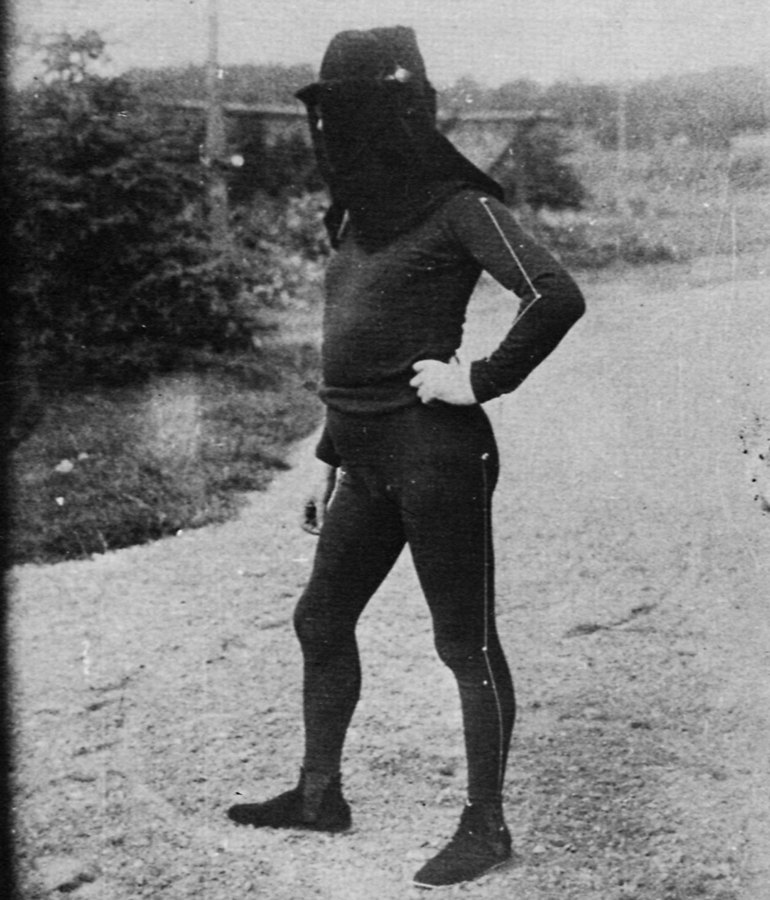
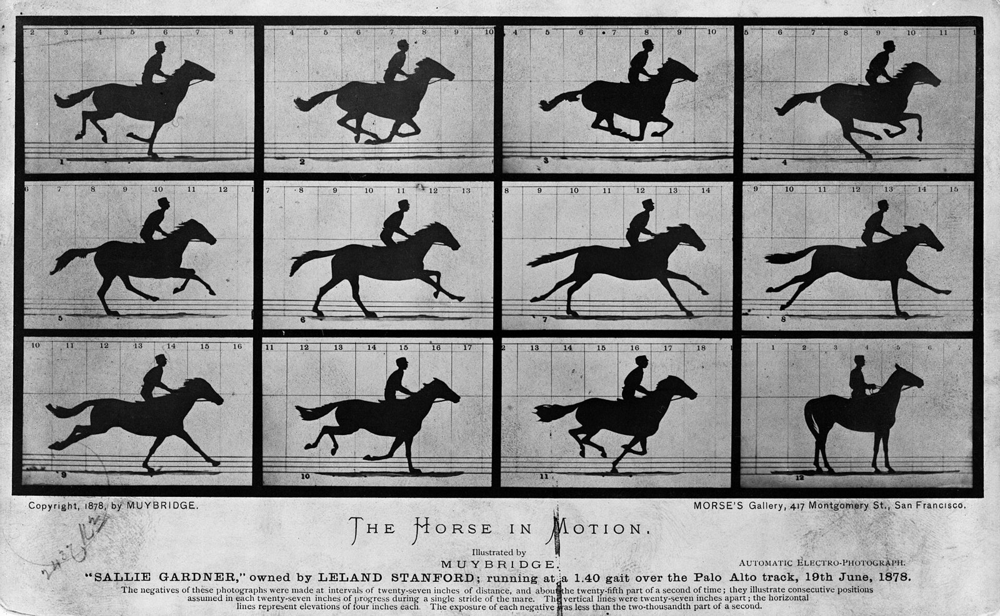
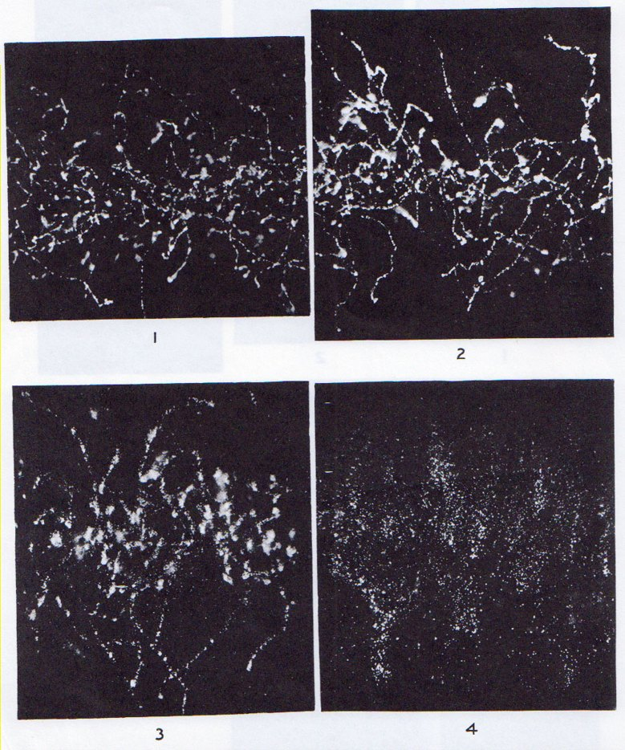
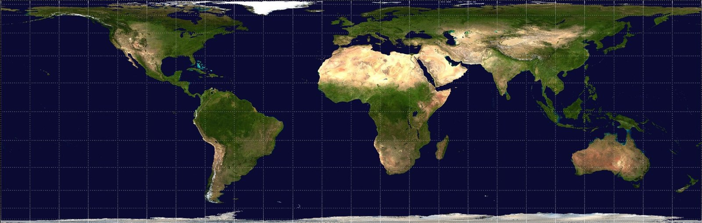
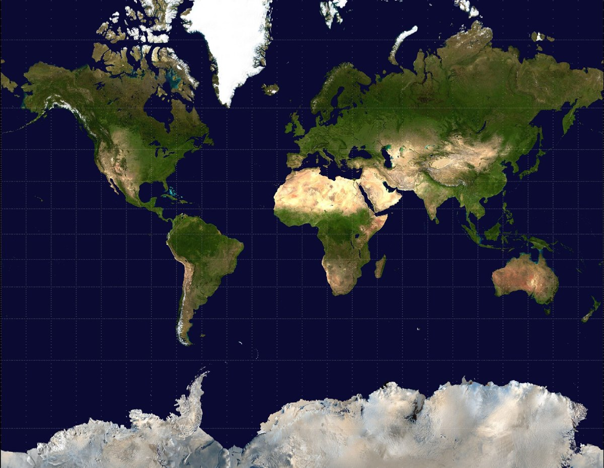

序マレーは、人を消して線を残した
1882年の暮れ、パリの生理学者エティエンヌ＝ジュール・マレーは、助手のために黒い衣装を用意させた。頭から足先までを黒で包み、腕と脚の外側に白く光る線を一本ずつ通す。黒い幕の前でこの男を走らせ、一枚の乾板に短い露光を何度も重ねると、人の姿はほとんど写らない。残るのは、折れ曲がった脚の線の束が、扇を開くように少しずつずれて並んでいく図と、その上を点々と進む頭の跡である。

その数年前、カリフォルニアのマイブリッジは、競走路に十二台のカメラを並べ、駆ける馬を十二枚に切り分けた（1878年）。カードの注記によれば、一枚ごとの露光は二千分の一秒に満たない。四本の脚が同時に地面を離れる瞬間が、初めて写った。けれども、どの一枚の中でも馬は止まっている。

マレーは姿を捨て、線を守った。紙の上の一点を指せば、その時どこにいたかが分かる。線の傾きを読めば、どちらへどれだけの速さで動いていたかが分かる。古典力学の粒子は、すべてこの線で描かれる。横に位置、縦に運動量をとった紙を用意すれば、粒子の状態はその上の一点で、時間とともに一本の線を描く。
量子力学は、この一点を許さない。状態は紙の上で広がりをもった区画を占め、その縦横の広がりの積 Δx·Δp は ħ/2 を下回らない。講義の第6章で計算したのが、この区画の大きさである。では、電子について、線はもう引けないのか。
一霧箱の線は、なぜ引けたのか
引けそうに見える証拠は、1911年からある。ウィルソンの霧箱では、過飽和の蒸気の中を走る荷電粒子が、通り道に霧の粒を残す。α線ならほとんどまっすぐな、X線が叩き出した遅い電子なら糸くずのように曲がりくねった、白い線が写る。曲がっていても、線は線としてつながっている。

1927年、ハイゼンベルクは不確定性関係の論文で、この線に一行で答えた。「『軌道』は、われわれがそれを観測することによってはじめて生じる」（引用者訳）。霧の粒の一つ一つが位置を測る小さな測定器で、線はその点の列だ、という。
点の列が線に見える理由は、粗い見積もりで足りる。霧の粒の幅を 1 μm として、講義の不等式から運動量の最小のぶれを出すと、およそ 5×10⁻²⁹ kg·m/s。運動エネルギー 1 MeV の電子の運動量はおよそ 7.6×10⁻²² kg·m/s だから、進む向きのぶれは千四百万分の一ほどになる。10 cm 走っても、横には約 7 nm しかずれない。霧の粒の百分の一にも届かない。区画は確かにあるが、線の太さに埋もれて見えない。1929年、モットはα線の飛跡についてこれを波動関数の計算だけで解き、球面に広がるはずの波から一直線の霧の列が生まれることを示した。
線は刻み目の上に引かれていた。では、刻み目の大きさを決めているのは何か。
二顕微鏡は、面積を作らない
ハイゼンベルクの最初の説明は、刻み目を見る手のせいにした。電子の位置を細かく知るには、波長 λ の短い光（γ線）を当てるしかない。短い波長の光子は運動量 h/λ が大きく、ぶつかった電子を蹴り飛ばす。見ることが乱す、という物語は分かりやすく、教科書に長く残った。
論文を読んだボーアは、すぐに穴を指摘した。レンズの口径が勘定に入っていない。口径の半角を ε とすると、顕微鏡で決まる位置の幅はおよそ λ/sin ε、光子がどちらへ散ったか分からないことによる運動量の幅はおよそ (h/λ) sin ε。ハイゼンベルクは論文を取り下げず、校正の段階で後記を付けて訂正を認めた。
訂正後の二つの幅を掛けると、λ も ε も消えて h が残る。波長を短くすれば位置は細く運動量は太く、長くすればその逆になる。口径を変えても同じことが起きる。顕微鏡にできるのは、区画の縦横比を選ぶことまでで、面積には手が届かない。
同じ1927年、ケナードは、この面積を測定器の出てこない言葉で書いた。状態 ψ が与えられれば、位置の標準偏差と運動量の標準偏差が計算でき、その積は ħ/2 を下回らない。講義の第1章で Δx を、第6章でその積を計算したとき、どこにも光子は飛んでいなかった。測定の誤差と擾乱の積については、2003年に小澤正直が素朴な形の式は一般には成り立たないことを示し、2012年の中性子の実験がそれを確かめた（解釈には異論もある）。この実験が調べたのは誤差と擾乱で、ケナードの式は検証の対象に入っていない。
面積は、顕微鏡を持ち込む前から、状態の側に書かれている。
三声は、二通りの区画で描ける
1946年、電気技術者のガボールは、信号を時間と周波数の平面に描き、区画に分けてみせた。短い信号ほど周波数が定まらず、周波数を定めたければ長く鳴らすしかない。最小の区画を占めるのは、ガウス型で包んだ信号である。ガボールはこれを「情報の量子」と呼び、論文の中でハイゼンベルクの名を挙げた。
ガボールは、フーリエ積分を「永遠の相のもとに」信号を見る方法とも呼んでいる。講義の平面波 eikx がまさにそれで、波数は一つに決まっているが、始まりも終わりもなく、どこまでも同じ強さで続く。周波数を完全に尖らせた音は、永遠に鳴りつづける音でしかありえない。
翌1947年、ベル研究所は人の声をこの平面に焼きつけた図を本にした（『Visible Speech』）。一つの声から二種類の声紋が作れる。帯域およそ 300 Hz の広帯域で描くと、声帯の一打ち一打ちが縦の縞として並び、45 Hz ほどの狭帯域で描くと、倍音が横の線として一本ずつ浮かぶ。音声学者は、知りたいことに合わせて区画の形を選ぶ。二枚は同じ声で、講義の ψ(x) と ψ̃(k) のように、どちらからでも他方へ戻れる。
四地図は、面積を守ると形がゆがむ
面積は減らせず、形は選べる。この関係を、地図を描く人々は二百五十年前から抱えていた。
1772年、数学者で物理学者でもあったランベルトは、地球の表面を円筒に写す図法の一つを発表した。赤道から離れるほど南北に押しつぶし、そのぶん東西に引き伸ばす。どの土地も実際の面積の比のまま紙に載るかわりに、高緯度の大陸は横に平たくなる。形を守ればメルカトル図法のように面積が狂い、グリーンランドがアフリカほどにふくれあがる。


地図職人の腕を磨いても、これは直らない。1827年、ガウスは、曲面を伸び縮みさせずに平面へ写せるかどうかが、曲面そのものに刻まれた量（曲率）で決まることを示した。球面は曲がっているので、形と面積を同時に保ったまま平らな紙に写すことは、どんな名人にもできない。
ここで見立てはずれる。地図は、図法を選べば面積を完全に守れる。量子の区画には下限があるうえ、形の選び方によって余分がつく。講義の §6.3 の表で、ħ を単位にした積は、ガウス型でちょうど 0.500、角のある矩形では無限大になる。角を描くには、いくらでも大きな波数が要るからだ。量子力学の紙では、最小の区画を占められるのはガウス型だけで、ほかの形はどれも少しずつ余分な面積を抱えている。
結|ψ|² の写真には、動きが写らない
講義の図5-1 に、二つの波束が上下に並んでいる。上は実数の波動関数、下はそれに位相 eik₀x を掛けたもの。|ψ|² は上下でまったく同じなのに、下の粒子は運動量 ħk₀ で右へ進み、上の粒子は平均として止まっている。
確率密度は、マイブリッジの一枚に似ている。どこにどれだけいるかは写っていて、動きは写っていない。動きは位相に書かれているので、運動量の演算子 −iħ∂ₓ は ψ を微分して、位相の傾きを読む。マレーが光る線で写そうとしたものは、電子では、写真に写らない位相の中にしまわれている。
線を消したのは、見る手の粗さではない。
本棚このコラムの書架
参照した本 ── 本文が依拠した原典
- W. Heisenberg, "Über den anschaulichen Inhalt der quantentheoretischen Kinematik und Mechanik", Z. Phys. 43, 172 1927γ線顕微鏡の議論と、「軌道」の一文（p.185）
- N. F. Mott, "The wave mechanics of α-ray tracks", Proc. R. Soc. A 126, 79 1929霧箱の飛跡を波動関数で説明した論文
- D. Gabor, "Theory of communication", J. IEE 93 (III), 429 1946時間と周波数の区画、「情報の量子」、「永遠の相のもとに」
- M. Ozawa, Phys. Rev. A 67, 042105 ／ J. Erhart et al., Nature Physics 8, 185 2003 ／ 2012誤差と擾乱の不等式と、その中性子実験
※ハイゼンベルクとモットの論文は、論文の解説（Stanford Encyclopedia of Philosophy、AIP ほか）と書誌で確認した。『Visible Speech』（Potter, Kopp, Green, 1947）は通読しておらず、声紋の帯域（300 Hz／45 Hz）は音声学の教材による標準的な値である。
参考図書 ── さらに読むために
- Marta Braun, Picturing Time: The Work of Etienne-Jules Marey (1830–1904) University of Chicago Press, 1992光る線の衣装から写真銃まで、マレーの「動きを線にする」仕事の全体像
- John P. Snyder, Flattening the Earth: Two Thousand Years of Map Projections University of Chicago Press, 1993何を守り何をゆがめるかという選択の歴史として、地図投影法を通覧できる
図版の出典
- 扉：マレー「光る線に還元された走者」：File:Image chronophotographique d'un coureur.jpg（Public domain。図版の下のキャプションを切り取り、黒地に置いて拡大）
- 序：マレーの衣装（1883）：File:Mann trägt für ein Experiment einen schwarzen Anzug…1883.jpg（Public domain。縮小のみ）
- 序：マイブリッジ《動く馬》：File:The Horse in Motion high res.jpg（Public domain。縮小のみ）
- 一：ウィルソンの霧箱写真（1912）：File:Cloud chamber 1912 X-ray.jpg（Public domain）
- 四：ランベルト正積円筒図法：File:Lambert-cylindrical-equal-area-projection.jpg、メルカトル図法：File:Mercator-projection.jpg（ともに Public domain。縮小のみ）


事実確認に用いた資料
- Stanford Encyclopedia of Philosophy: The Uncertainty Principle：γ線顕微鏡、ボーアの指摘と後記、ケナード（1927）
- AIP: Heisenberg — Quantum Mechanics, 1925–1927：不確定性論文の成立とボーアとの議論
- Mott problem（Wikipedia）、Figari & Teta, arXiv:1209.2665：モット（1929）の書誌と内容
- JST サイエンスポータル（2012年1月16日）：小澤の不等式の中性子実験（掲載誌は Nature Physics）
- D. Gabor, Theory of communication（スキャン）：情報図、ハイゼンベルクへの言及（p.432）、"sub specie aeternitatis"
- NCVS: The Spectrograph and Spectral Analysis：広帯域・狭帯域の声紋
- The Horse in Motion（Wikipedia）と図版のカードの注記：1878年6月19日、露光は二千分の一秒未満
- BIU Santé: Marey：黒い衣装と光る線（1882年12月）、幾何学的クロノフォトグラフィ
- Lambert cylindrical equal-area projection（Wikipedia）：1772年の発表